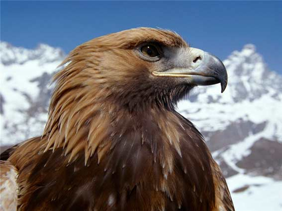

БЕРКУТ

Зовнішній вигляд
Великий птах з розмахом крил в середньому до 2 м. Самиця може досягати довжини тіла 90-100 см; самець в середньому на 10 см менше. Розмах крил у самців коливається від 190 до 210 см, а у самиць — від 200 до 230 см. Самиці важать від 3,8 до 6,7 кг, більш легкі самці — від 2,8 до 4,6 кг. У дорослого птаха верх голови і задня частина шиї рудувато-вохристі із золотистим відтінком, інше оперення темно-буре; хвіст сіруватий із вузькими темними поперечними смугами, на кінці — широка темна смуга; восковиця і пальці жовті. У молодого птаха забарвлення темно-буре; основа махових пір'їн біла; хвіст білий із широкою темною смугою на кінці; протягом 5 років пір'я поступово набуває вигляду, як у дорослого.
Розрізняють шість підвидів беркутів, які відрізняються загальними розмірами та яскравістю забарвлення.
Зір
У беркута, як і у інших орлів, а також яструбів і соколів, надзвичайно гострий зір, та лише в світлий час доби. Так, наприклад, зайця цей орел бачить на відстані до двох кілометрів. Низка адаптацій, що виявилися в здатності швидко визначити величину об'єкта і відстань до нього, розвинулися внаслідок еволюції. Великі очі дозволяють відбивати більше зображення на сітківці ока, а значно вища щільність світлочутливих клітин (паличок і колбочок) робить його більш чітким і докладним. До того-ж в кожному оці присутні не одна, як у інших тварин, а дві центральні ямки — місця найбільшого скупчення рецепторів (така ж особливість є у деяких інших груп птахів, яким потрібно підвищене зосередження уваги — колібрі, рибалочкових і ластівок). Особливі кільцеві м'язи швидко фокусують кришталик ока на біжучій тварині, не втрачаючи її з поля зору — особливість, відома під назвою акомодація. Рухома шия здатна повертатися до 270 градусів, як у сов, що істотно збільшує межі огляду. Надбрівна згортка, що надає хижакам грізного «насупленого» вигляду, захищає очі від яскравого сонячного світла, а друга блимальна перетинка нижньої частини віка, оберігає їх від потрапляння частинок пилу. З людиною, беркута об'єднують рідкісні серед тварин бінокулярний зір і здатність розрізняти кольори — перше дозволяє поєднувати зображення з обох очей, створюючи стереоскопічний ефект, друге покращує визначення нерухомого об'єкта на місцевості.
Політ
Беркути часом вважаються найкращими літунами серед орлів і, можливо, серед усіх хижих птахів. Беркути непересічні серед свого роду тим, що вони часто літають у невеликому двогранному куті.
У пошуках їжі беркут найчастіше, довго ширяє високо в висхідних потоках теплого повітря, водночас крила у нього злегка підняті над тулубом і V-подібно витягнуті вперед, а їх активність залишається щонайменшою. Інший спосіб полювання — ковзання на невеликій висоті подібно яструбам великим в надії захопити здобич зненацька. Маховий політ легкий і жвавий, з сильними і глибокими рухами крил, і котрий зазвичай, складається з 6-8 помахів, перемежованих 2–3 секундами ковзань. Звичайна, некваплива швидкість ширяння у беркутів становить близько 45–52 кілометрів на годину. Орел легко керує в повітрі навіть за дужих поривів вітру. Помітивши ймовірну жертву, беркут шугає слідом за нею, коли його швидкість може досягати 240-320 км / год. Це робить беркута однією з двох найшвидших живих тварин в природі.
Чисельність і причини її зміни
З давніх-давен люди сприймали беркута не лише як «короля повітря», але також як суперника на полюванні та ворога сільськогосподарських тварин. Постійне переслідування та винищення беркутів почалося ще в 17 столітті, заразом з бурими ведмедями, вовками, рисями, ягнятниками та іншими хижаками. Орлів відстрілювали в Європі або ловили пастками та винищували отруйними приманками, гнізда випотрошували і знищували. Цей спад досить добре задокументовано для Німеччини. Ще в 17 столітті останні гніздові пари зникли з Тюринзького лісу та Рудних гір, приблизно 1750 року з Гарцу та близько 1800 року зі Швабського Альбу, тощо. Згодом, беркути залишилися лише в Баварських Альпах.
Попри надмірне переслідування в усьому альпійському регіоні, беркут вижив там, оскільки багато гнізд тут були недоступні. На початку 20-х років минулого століття тут було обмежено полювання на беркутів, 1925 року їм було надано цілорічний закритий сезон у Баварії та Тіролі, а в Швейцарії полювання було повністю заборонено до 1953 року.
Приблизно з середини 1970-х років в альпійському регіоні спостерігалося чітке і стійке збільшення кількості беркутів. Загальна чисельність гніздових пар (ГП) в Альпах зараз оцінюється в 1100–1200 штук. Чималі скупчення в Європі також є в Іспанії (приблизно 1300 ГП у 1998–2002 роках), Норвегії (860–1040 ГП, 2003) та Фінляндії (300–350 ГП, 2002). Європейську гніздову популяцію 2004 року оцінювали у 8,4–11 тисяч гніздових пар.
У Сполучених Штатах до цього виду застосовується Закон про захист орланів білоголових та беркутів з 1952 року, а утримання живих тварин та володіння мертвими орлами та їх частинами тіла суворо регламентовані. Національне сховище орлів видає дозволи та розподіляє тварин, знайдених мертвими, індіанцям задля релігійної та культурної мети.
У теперішній час беркут повністю зник або став дуже рідкісним птахом у багатьох регіонах світу та більш - менш зберігся лише у горах, тундрі й у степах.
В Україні наприкінці XIX — на початку ХХ ст. гніздився не лише в Карпатах, а й на теренах сучасних Кіровоградської, Чернігівської, Житомирської, Рівненської, Дніпропетровської областей. У 1940–1954 рр. чисельність осілої карпатської популяції не перевищувала 10–11 пар. У середині 1960-х років в Карпатах налічувалось 6–8 пар. Зараз карпатську популяцію оцінюють у 10–15 пар. На стан виду негативно впливають: знищення старих ділянок лісу, де птахи гніздяться; скорочення кормової бази; вбивство птахів для виготовлення опудал; випадкове їх потрапляння у мисливські пастки.
Попри все, за оцінками МСОП чисельність беркутів у світі становить приблизно 250 000 птахів і вважається сталою. Тому вид класифікується як "не зникомий".
Особливості біології
Яйце та пухове пташеня
Мешкає у різноманітних відкритих і частково відкритих ландшафтах, що зрідка відвідуються людьми, у тому числі тундрі, лісотундрі, місцях, що заросли кущами, високостовбурових хвойних та мішаних лісах з відкритими ділянками, степах, напівпустельних каньйонах. В Україні у гніздовий період, трапляється у хвойних та широколистяних лісах, під час зимівлі — всією країною. На місцях гніздування з'являється вже в лютому. Моногамний вид. Гнізда влаштовує на скелях або на деревах. Відкладання яєць починається наприкінці березня — у квітні. У кладці 1–2 яйця. Насиджування триває 43–45 діб. Пташенята з'являються на світ з проміжком в 3-4 дні. Вони покриті біло-сірим пухом. У первістка завжди більше шансів на виживання, оскільки він поводиться брутально відносно решти, може клювати їх, відштовхувати і не давати приймати їжу. Батьки не зважають на таку поведінку, і зрештою від 50 до 80% пташенят гинуть в перші тижні життя. Зазвичай виживає одне пташеня.
Поки пташенята залишаються маленькими і безпорадними, самець добуває їжу і приносить в гніздо, де самиця зігріває і вигодовує виводок. Коли пташенята досить підростають, щоби самостійно скльовувати їжу, самка теж починає полювати. Встають на крило молоді птахи у віці від 65 до 80 днів, але ще довгий час залишаються в межах своєї гніздової ділянки. Пташенята зазвичай залишають гнізда у другій половині липня — серпні.
Статевої зрілості досягає на 4–5 році. Тривалість життя беркутів в дикій природі близько 23 років, завдяки чому популяція залишається сталою. Найбільший вік беркута на волі — більше 32 років, був відмічений в Швеції. У зоопарках ці птахи доживають до 50 років. Перші пролітні птахи з'являються наприкінці вересня.
Живиться птахами, ссавцями розміром до лисиці. Значну частину в харчуванні заповнює падло, яке птахи поїдають насамперед взимку.
Шлюбні ігри
В польоті
Шлюбний сезон залежно від широти і рівня осілості, настає в проміжок з лютого по квітень. У цей час обидва птахи пари, поводяться надмірно показово — виконують різні повітряні виверти.
Однією з найбільш видовищних витівок, вважається притаманний для орлів і канюків так званий «гірляндовий», хвилеподібний політ з великим розмахом, який може виконуватися одним або обома особинами пари. Під час вибриків, орел набирає висоту і зривається в майже прямовисне шугання, розгорнувши плечі і притиснувши кінці крил до хвоста. У нижній точці птах різко змінює напрямок руху і під кутом відбиття, лине вгору на колишню висоту. У верхній точці орел, втративши швидкість, робить кілька помахів крилами і знову пірнає, повторюючи попередній виверт. Інші показові вихватки — гонитва один за одним, вдавання нападу, показ кігтів, спільне ширяння і кружляння колом.
Гніздо
У час розмноження, терени навколо гнізда завжди добре охороняються від інших хижаків, проте птахи не так захищають власне гніздо, як межі ділянки, проганяючи прибульців на його околицях. Птахи на гнізді, потривожені людиною, лише зрідка намагаються вступити в сутичку, натомість дуже легко кидають кладку або пташенят, і назавжди покидають цей район.
Будівництво та облаштування гнізд у осілих беркутів може тривати протягом усього року, проте найбільша дієвість, насамперед припадає на проміжок з кінця січня до початку березня. Кожна пара може одночасно утримувати до дванадцяти гнізд, які використовуються поперемінно, проте їх кількість найчастіше не перевищує двох чи трьох. Часто гнізда не просто старі, а стародавні — про це можна судити за кількістю кісткових останків під ними. Щорічно споруди оновлюються і добудовуються.
На дереві, беркуту потрібний хоча б невеликий відкритий простір для підльоту — в лісі це можуть бути просіка, стара дорога, галявина, схил пагорбу, край болота. Ще одна вимога — захист від дужого вітру і прямого потрапляння сонячних променів, які можуть згубно позначитися на розвитку потомства. Відстань від гнізда до поверхні землі, власне великого значення не має (відомі випадки від 0 до 107 м), якщо воно недоступне для великих наземних хижаків на зразок бурого ведмедя або росомахи. Під час розмноження на деревах гніздо, насамперед, влаштовується в нижній або середній частині крони на висоті від 10 до 18 м, де гілки досить грубі і міцні, щоби витримати вагу будівлі і птахів. Гнізда, зроблені з дебелих сучків, у цьому разі мають дуже великі розміри — діаметр 1-2 м і висоту 0,5-1,9 м. На відміну від інших близьких видів, беркути завжди вистилають лоток торішньою травою, корою і шматочками моху, а по краю гнізда зеленими гілками хвойних або рідше листяних порід дерев і чагарників. В гнізді також можуть бути присутніми пір'я і хутро убитих тварин, які служать своєрідною підстилкою. Гніздо доглядається — свіже вистилання передує не лише кладці яєць, а й триває протягом усього часу розмноження аж до вильоту пташенят. Щороку гніздо підправляється і добудовується, поступово збільшуючись у розмірах. Між грубими суками гнізда можуть жити горобці, на яких беркути не зважають.
Спосіб полювання
Поза сезоном розмноження, зазвичай полює парами. Спосіб здобування їжі головним чином, залежить від погоди. Ясного сонячного дня, беркути найчастіше подовгу ширяють високо в небі або подібно яструбам великим, ковзають на малій висоті. Інший спосіб полювання більше притаманний для негожого дня — із засідки, коли птах терпляче озирає околиці з висоти мертвого дерева або великого валуна. Помітивши ймовірну жертву, орел переходить на швидкий і рухливий маховий політ або шугає з частково складеними крилами, хапає її на землі чи, якщо жертва — птах, інколи на зльоті. Захоплення і умертвіння здобичі, різноманітне. Найчастіше беркут однією лапою захоплює жертву за голову, а другою за спину, намагаючись переламати хребет. Іноді б'є дичину в шию гострим гачкоподібним дзьобом, розриваючи великі кровоносні судини. Велику тварину яка опирається, вдаряє кілька разів за допомогою крил, тримаючись на її спині.
Вправність полювання збільшується з віком орла. Молодий, що не досяг статевої зрілості птах, загалом ловить лише одного зайця з двадцяти, проте згодом досягає такої умілості, що хапає жертву ще до того, як та спробує врятуватися втечею. До здобичі, котру важко спіймати, такої як фазани або куріпки, беркут швидко втрачає цікавість. Птах здатен переносити в лапах до 4-5 кг м'яса і в час розмноження, часто розриває здобич на шматки перш, ніж віднести її до гнізда. Якщо здобич досить велика, орел повертається до неї знову і знову, проганяючи інших падальників, таких як грифи. Іноді орли забирають здобич у інших птахів, свого або чужого виду. Зокрема, в Канаді такі спроби були неодноразово відзначені у випадку з канюком неоарктичним (Buteo jamaicensis).
НАЗАД ДО МЕНЮ
НАЗАД ДО РОЖЕВОГО ФЛАМІНГО
ПЕРЕЙТИ ДО АФРИКАНСЬКОГО ГРИФА